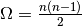

src.mapping package¶
Submodules¶
src.mapping.mapthreading module¶
Module used to map a pair of vectors into a new combined vector space. Those mappings will be created by multiple threads in a master-slave-pattern. To do so, the user can choose between different vector operations as offset, cosine similarity, euclidean distance and many more.
Warning
Because of , it is recommended to use the co-occurrence constraint , which limits the calculations to word embedding pairs which words occurred together in a corpus in at least n sentences (but it will still take quite a while).
-
class
src.mapping.mapthreading.MappingMasterThread(n, vector_inpath, vector_outpath, features, lambda_, ids_inpath, indices_inpath)¶ Bases:
threading.ThreadMaster thread class. The master thread loads all necessary data into suitable data structures and distributes them among all worker threads.
-
prepare()¶ Loads The master thread loads all necessary data into suitable data structures. To be more specific, word embeddings, sentence IDs and word indices are processed.
-
read_ids_file(ids_inpath)¶ Read the sentence ID file.
Parameters: ids_inpath (str) – Path to sentence IDs file. The file should be in the following YAML-format: - <word>:
- <sentence id>
- <sentence id>
...
Returns: Dictionary with words as keys and the IDs of the sentences they occur in in a set as value. Return type: defaultdict
-
start_threads()¶ Starts all the threads (and ends them if they’re all finished).
-
-
class
src.mapping.mapthreading.MappingWorkerThread(worker_id, vector_dict, vector_queue, vector_outpath, features, occurrences, indices, lambda_)¶ Bases:
threading.ThreadWorker thread class. The worker threads do all the dirty work after they receive all necessary data from the master thread an try to calculate every possible combinations of two word embeddings in a dataset.
All the word embeddings will be stores in a dictionary (
VectorDictas well as aQueue). An idle thread picks a new vector from the queue and then starts to iterate over all the vectors in theVectorDict(this way, the queue gets shorter over time while the size of the dictionary stays fixed).Before it starts calculations, it checks a) if the co-occurrence constraint is satisfied and b) if this combination of word embeddings has already been processed.
-
cosine_similarity(v1, v2)¶ Calculates the cosine similarity () between two vectors.
Parameters: - v1 (numpy.array) – First vector
- v2 (numpy.array) – Second vector
Returns: Cosine similarity between the two vectors.
Return type: float
-
distance(v1, v2)¶ Return the vector offset of two vectors:
Parameters: - v1 (numpy.array) – First vector
- v2 (numpy.array) – Second vector
- Returns
- numpy.array: Vector offset.
-
euclidean_distance1(v1, v2)¶ Return the euclidean distance between two vectors.
Parameters: - v1 (numpy.array) – First vector
- v2 (numpy.array) – Second vector
Returns: Euclidean distance between the two vectors.
Return type: float
-
euclidean_distance2(v1, v2)¶ Returns the squared euclidean distance between two vectors.
Parameters: - v1 (numpy.array) – First vector
- v2 (numpy.array) – Second vector
Returns: Squared euclidean distance between the two vectors.
Return type: float
-
hash_indices(i1, i2)¶ Combines two vector indices (the indices of the words’ embeddings used in vector operations) into a hash s.t. threads can do an easy lookup if a mapping vector has already been calculated. To guarantee this, has to be the case.
Parameters: - i1 (int) – Index of first word’s embedding
- i2 (int) – Index of second word’s embedding
Returns: Unique hash for index pair.
Return type: int
-
manhattan_distance(v1, v2)¶ Returns the manhattan distance between two vectors.
Parameters: - v1 (numpy.array) – First vector
- v2 (numpy.array) – Second vector
Returns: Manhattan distance between the two vectors.
Return type: float
-
run()¶ Starts a worker thread.
-
soft_cosine_similarity(v1, v2)¶ Calculates the soft cosine similarity between two vectors.
(It considers the similarity between pairs of features.)
Parameters: - v1 (numpy.array) – First vector
- v2 (numpy.array) – Second vector
Returns: Soft cosine similarity between the two vectors.
Return type: float
-
-
class
src.mapping.mapthreading.VectorDict¶ Bases:
object- VectorDict class that serves two functions:
- 1.) Storing word embeddings so they don’t allocate memory for every worker thread2.) Providing a set, where are processed vector pairs are stored so no redundant computations are made.
Locks are used for synchronization purposes.
-
add_skippable(index_hash)¶ Add the hash of an index pair to a set of already processed vector pairs.
Parameters: index_hash (int) – Hash value of index pair. Produced with hash_indices().
-
add_vector(index, vector)¶ Add a new word embedding.
Parameters: - index (int) – Index of the word the embedding belongs to.
- vector (numpy.array) – Word embedding corresponding to given index.
-
get_keys()¶ Get all the keys (word embedding IDs) of this dictionary.
Returns: List of word embedding IDs. Return type: list
-
get_vector(index)¶ Get a word embedding given its word’s index.
Parameters: index (int) – Index of the word the embedding belongs to. Returns: Word embedding corresponding to given index. Return type: numpy.array
-
skippable(index_hash)¶ Checks whether a pair of vectors has already been processed.
Parameters: index_hash (int) – Hash value of index pair. Produced with hash_indices().Returns: Whether a pair of vectors has already been processed. Return type: bool
-
src.mapping.mapthreading.alt(func)¶ Prepends the local time to the output of a function.
Parameters: func (function) – Function the local time should be prepended to.
-
src.mapping.mapthreading.init_argparse()¶ Initialize all possible arguments for the argument parser.
Returns: ArgumentParser object with command line arguments for this script. Return type: argparse.ArgumentParser
-
src.mapping.mapthreading.main()¶ Main function that initializes the master thread with command line arguments and starts it.